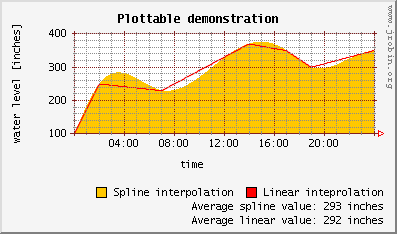
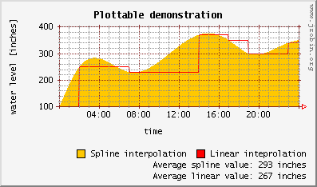
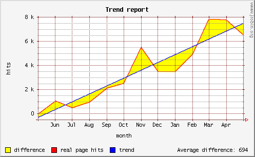
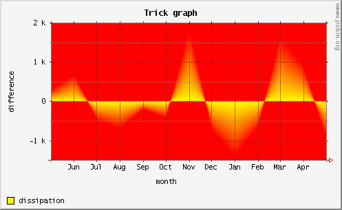

Standalone graphing engine

With RRDTool you cannot great time series graphs if your data is not already stored in RRD files. On the contrary, JRobin's graphing engine (jrobin.graph.* package) can be used for general timeseries plotting since version 1.3.0. It means that you can use JRobin to create good looking graphs for time series of (almost) any kind. The implementation of it is quite simple: just inherit the Plottable abstract class and override one of its three methods. Probably, you'll do something like this:
Plottable plottable = new Plottable() {
public double getValue(long timestamp) {
// implement your own logic here and return a double value
// which corresponds to the given timestamp
// (note that timestamp is rounded to the nearest second)
...
}
}
This plottable object can be passed to RrdGraphDef object as an ordinary datasource:
RrdGraphDef gDef = new RrdGraphDef();
...
gDef.datasource("custom", plottable);
...
gDef.line("custom", Color.BLACK, "my custom function");
...
This approach is good enough to plot any mathematical function of type y=f(t). But your data probably comes from periodic measurements. You'll probably end with a collection of isolated points (dots) in the (time, value) plane. JRobin has two suitable classes to address this issue (both inherit Plottable abstract class):
- LinearInterpolator: use this class to connect the dots using simple linear interpolation (can't be simpler).
- CubicSplineInterpolator: use this class to connect the dots using normal cubic spline interpolation (always produces nice, smooth curves).
Suppose that on March 1st you monitored the level of water in a nearby tank. Measured water height (in inches) was:
time | height ---------------- 00:00 | 100 02:00 | 250 07:00 | 230 14:00 | 370 17:00 | 350 19:00 | 300 23:00 | 340 24:00 | 350
Suppose that I want to plot this data using both linear and spline interpolation. It's quite straightforward and suprisingly simple. First, you have to specify your physical data:
GregorianCalendar[] timestamps = {
new GregorianCalendar(2004, 2, 1, 0, 0, 0),
new GregorianCalendar(2004, 2, 1, 2, 0, 0),
new GregorianCalendar(2004, 2, 1, 7, 0, 0),
new GregorianCalendar(2004, 2, 1, 14, 0, 0),
new GregorianCalendar(2004, 2, 1, 17, 0, 0),
new GregorianCalendar(2004, 2, 1, 19, 0, 0),
new GregorianCalendar(2004, 2, 1, 23, 0, 0),
new GregorianCalendar(2004, 2, 1, 24, 0, 0)
};
double[] values = { 100, 250, 230, 370, 350, 300, 340, 350 };
Then I'll define two interpolating objects:
LinearInterpolator linear = new LinearInterpolator(timestamps, values); // (1) CubicSplineInterpolator spline = new CubicSplineInterpolator(timestamps, values);
Finally I'll create the graph with some statistical values printed on it.
// graph range
RrdGraphDef gDef =
new RrdGraphDef(timestamps[0], timestamps[timestamps.length - 1]);
// graph title, time and value axis labels
gDef.setTitle("Plottable demonstration");
gDef.setTimeAxisLabel("time");
gDef.setVerticalLabel("water level [inches]");
// interpolated datasources
gDef.datasource("linear", linear);
gDef.datasource("spline", spline);
// splined plot will be an orange filled area
gDef.area("spline", Color.ORANGE, "Spline interpolation");
// simply interpolated plot will be a red line
gDef.line("linear", Color.RED, "Linear inteprolation@r");
// print average values for both interpolation methods
gDef.gprint("spline", "AVERAGE", "Average spline value: @0 inches@r");
gDef.gprint("linear", "AVERAGE", "Average linear value: @0 inches@r");
// create the graph...
RrdGraph graph = new RrdGraph(gDef);
// ...and save it somewhere
String filename = Util.getJRobinDemoPath("plottable.png");
graph.saveAsPNG(filename, 300, 100);
And here is what you get:

If you prefer to connect the dots with 'steps' (horizontal and vertical straight lines), just insert the following statement after the line (1):
linear.setInterpolationMethod(LinearInterpolator.INTERPOLATE_LEFT);
The difference is obvious:

NOTE: Since 1.4.0 version, LinearInterpolator class supports additional interpolation method: INTERPOLATE_REGRESSION. This method uses simple linear regression to interpolate supplied data with a straight line which does not necessarily pass through all data points. The slope of the best-fit line will be chosen so that the total square distance of real data points from from the best-fit line is at minimum. Check javadoc for the LinearInterpolator class to see the full explanation of all available interpolating methods.
In conclusion: Plottable class is a good starting point if you plan to use JRobin for something even more serious. Right now, the two interpolating classes will probably serve for most purposes.
Plottable demo
To see both interpolator classes and Plottable class in action, run the the following demo (source code is provided with the distribution):
java -cp jrobin-demo-{version}.jar \
org.jrobin.demo.PlottableDemo
If you run this demo in a headless environment (without X-server), be sure to specify
-Djava.awt.headles=true
option on the command line. The PlottableDemo creates more than a dozen of different graphs in your $HOME directory. Many of them are 'regular' graphs with no special coding:

...but some of them are quite dirty tricks:

Copyright © 2003, 2004 Sasa Markovic & Arne Vandamme. All Rights Reserved.